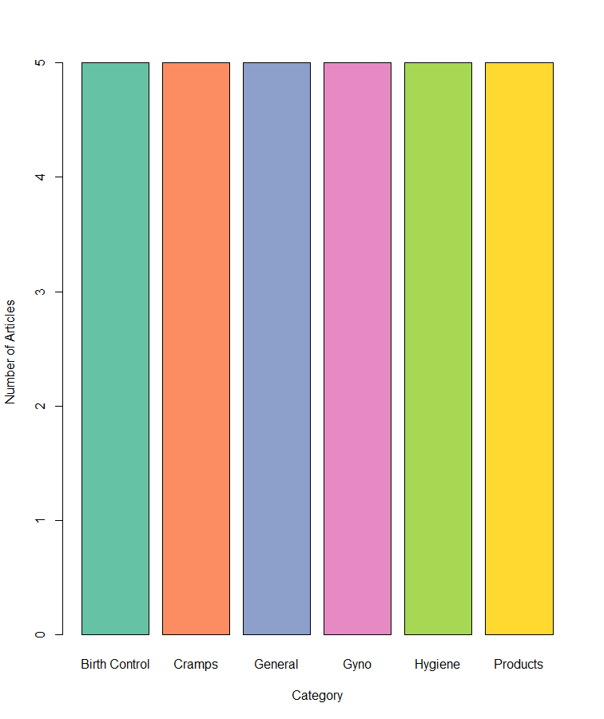

CSV file: All Articles under the "General" Category
| _id | name | preview | link | category |
|---|---|---|---|---|
| 60739f76938b66c4e83a515b | All About Periods (For Teens) | A period is a release of blood from a girl's uterus, out through her vagina. It is a sign that she is getting close to the end of puberty. There is a lot to learn about periods. Here are some common questions that teens have. | https://kidshealth.org/en/teens/menstruation.html | General |
| 60739f76938b66c4e83a515c | All About Menstruation | People (especially girls) talk a lot about periods. But what exactly is a period and what makes it happen? | https://www.rchsd.org/health-articles/all-about-menstruation/ | General |
| 60739f76938b66c4e83a515d | Your Menstrual Cycle | What happens during the typical 28-day menstrual cycle? Day 1 starts with the first day of your period. The blood and tissue lining the uterus (womb) break down and leave the body. | https://www.womenshealth.gov/menstrual-cycle/your-menstrual-cycle | General |
| 60739f76938b66c4e83a515e | 5 Things You May Not Know About Your Period | Think you know all there is to know about your period? Women have about 450 periods during their lifetime, which means you have plenty of chances to learn all about it. | https://www.webmd.com/women/5-things-about-your-period | General |
| 60739f76938b66c4e83a515f | 10 Common Period Questions | Period questions are so normal – you’re not alone! Here are answers to some of the most frequently asked questions. | https://always.com/en-us/tips-and-advice/your-first-period/10-common-period-questions | General |
Data Visualization: Barplot of the Number of Articles in each Category
